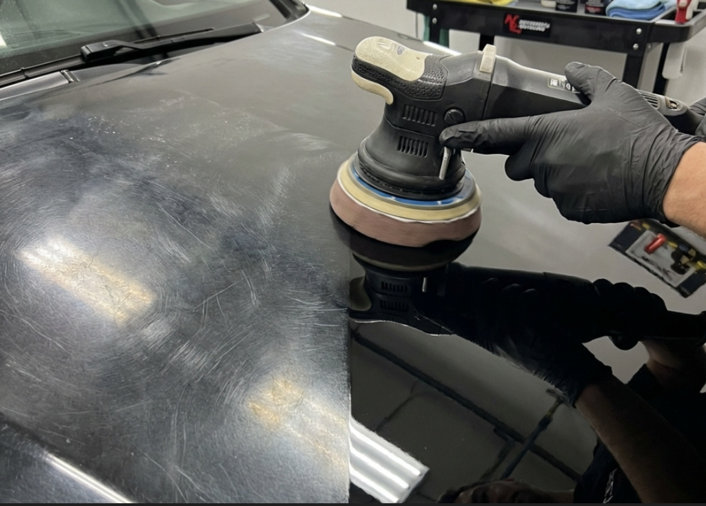

Servicio Principal
Lavado de Carrocería en Seco
Ecolavado de carrocería con productos biodegradables. Sin agua, sin rayas. Brillo espejo garantizado. Desde $15.000.
Ver precios y zonas¡Vamos a tu casa u oficina! Lavado de carrocería profesional en seco — ecológico, sin agua, sin daño a la pintura. Tu auto reluciente mientras tú sigues con tu día.

Todos nuestros servicios se realizan en tu domicilio u oficina, en toda la RM.
Ecolavado de carrocería con productos biodegradables. Sin agua, sin rayas. Brillo espejo garantizado. Desde $15.000.
Ver precios y zonas
Aspirado completo de alfombras, asientos y silicona protectora en plásticos interiores. A domicilio.
Más información
Eliminación de micro-rayas y recuperación del brillo espejo original de la carrocería.
Más informaciónMira la diferencia de un lavado de carrocería SmartCarWash profesional.
Recuperamos el brillo y la protección de la pintura con productos biodegradables de alta gama.

Eliminación de micro-rayas y recuperación del brillo espejo original de la carrocería.
Servicio completo de estética automotriz: carrocería, aspirado y silicona en tu domicilio.
"Increíble servicio de lavado de carrocería. Lo hicieron en el estacionamiento de la oficina mientras yo trabajaba. Ahorré 2 horas de mi día."
"El lavado de carrocería quedó impecable. La pintura de mi auto brilla como nueva. ¡Totalmente recomendados!"
"Puntuales y muy profesionales. El ecolavado de carrocería en seco deja un brillo que dura mucho más que el lavado con agua convencional."
Transparencia total en nuestros precios de lavado de carrocería a domicilio en Santiago.

Lavado de carrocería en seco, aspirado completo y silicona protectora.
Agendar Ahora
Lavado de carrocería profundo para camionetas de cualquier tamaño. Detallado profesional.
Agendar Ahora
Servicio especializado de lavado de carrocería para flota comercial y camiones de reparto.
Agendar AhoraProductos biodegradables de alta gama que protegen la pintura de tu carrocería sin contaminar.
Vamos a tu casa u oficina en toda la Región Metropolitana. Sin traslados, sin filas.
Tu lavado de carrocería listo en 45-90 minutos. Respetamos tu tiempo siempre.
El precio parte desde $15.000 CLP para autos compactos. City Car y SUV desde $25.000, camionetas desde $30.000 y camiones pequeños desde $40.000. El traslado a tu domicilio es sin costo adicional en toda la RM.
No. Utilizamos productos biodegradables premium que lubrican y levantan la suciedad sin rayar la pintura. Es incluso más seguro que el lavado con agua convencional, ya que evita la presión abrasiva sobre la carrocería.
Atendemos toda la Región Metropolitana incluyendo: Las Condes, Providencia, Vitacura, Ñuñoa, La Florida, Maipú, Pudahuel, San Bernardo, Macul, La Reina, Peñalolén y más. Cotiza por WhatsApp.
El servicio completo de lavado de carrocería y aspirado interior tarda entre 45 minutos y 1.5 horas según el tamaño del vehículo. Puedes seguir con tu rutina mientras nosotros cuidamos tu auto.
No. SmartCarWash llega con equipo completamente autónomo. Traemos nuestra propia agua y energía. Solo necesitas darnos acceso al vehículo y un espacio donde trabajar.
Agenda en 2 minutos y recíbenos hoy mismo en tu domicilio. Sin costos ocultos, satisfacción garantizada.
AGENDAR LAVADO AHORA